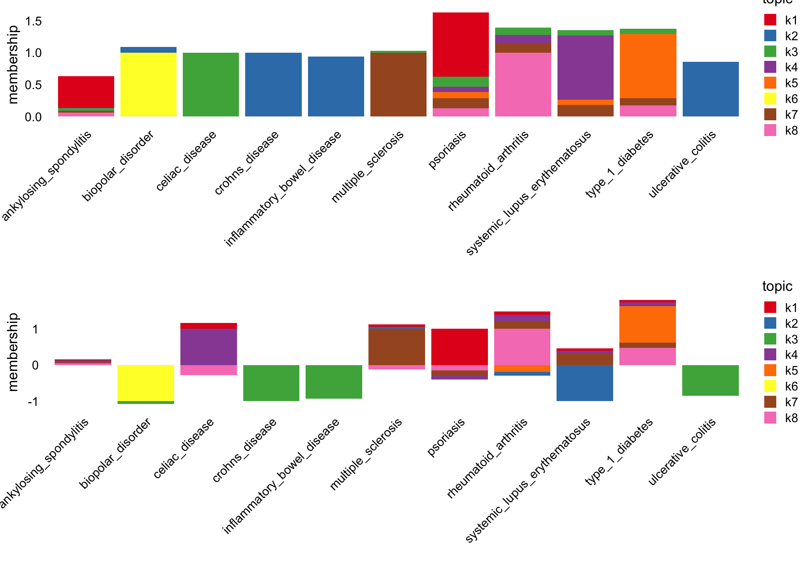
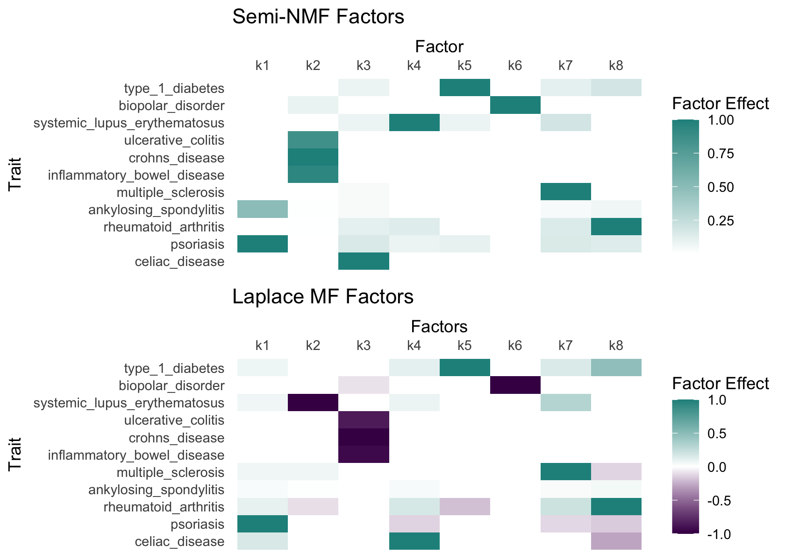
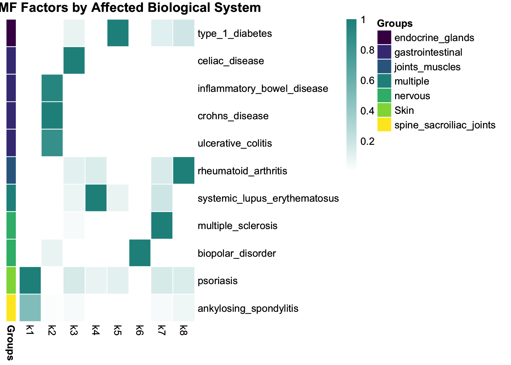
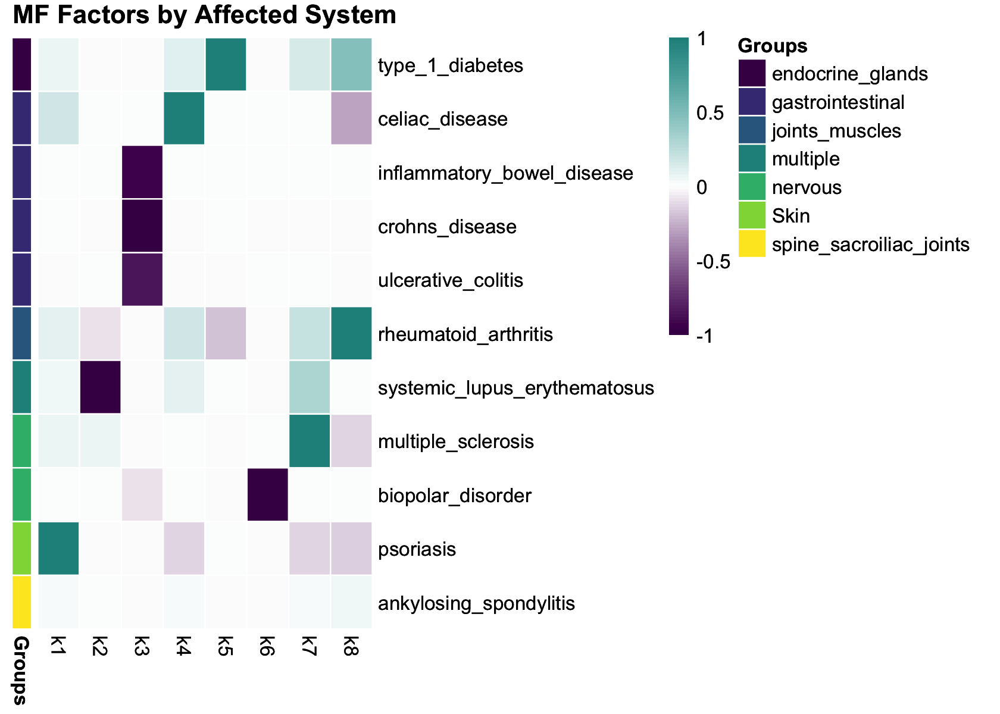

Last updated: 2025-05-01
Checks: 7 0
Knit directory: ebmf_immune/analysis/
This reproducible R Markdown analysis was created with workflowr (version 1.7.1). The Checks tab describes the reproducibility checks that were applied when the results were created. The Past versions tab lists the development history.
Great! Since the R Markdown file has been committed to the Git repository, you know the exact version of the code that produced these results.
Great job! The global environment was empty. Objects defined in the global environment can affect the analysis in your R Markdown file in unknown ways. For reproduciblity it’s best to always run the code in an empty environment.
The command set.seed(1) was run prior to running the
code in the R Markdown file. Setting a seed ensures that any results
that rely on randomness, e.g. subsampling or permutations, are
reproducible.
Great job! Recording the operating system, R version, and package versions is critical for reproducibility.
Nice! There were no cached chunks for this analysis, so you can be confident that you successfully produced the results during this run.
Great job! Using relative paths to the files within your workflowr project makes it easier to run your code on other machines.
Great! You are using Git for version control. Tracking code development and connecting the code version to the results is critical for reproducibility.
The results in this page were generated with repository version 1f8e827. See the Past versions tab to see a history of the changes made to the R Markdown and HTML files.
Note that you need to be careful to ensure that all relevant files for
the analysis have been committed to Git prior to generating the results
(you can use wflow_publish or
wflow_git_commit). workflowr only checks the R Markdown
file, but you know if there are other scripts or data files that it
depends on. Below is the status of the Git repository when the results
were generated:
Ignored files:
Ignored: .Rproj.user/
Note that any generated files, e.g. HTML, png, CSS, etc., are not included in this status report because it is ok for generated content to have uncommitted changes.
These are the previous versions of the repository in which changes were
made to the R Markdown (analysis/autoimmune_factors.Rmd)
and HTML (docs/autoimmune_factors.html) files. If you’ve
configured a remote Git repository (see ?wflow_git_remote),
click on the hyperlinks in the table below to view the files as they
were in that past version.
| File | Version | Author | Date | Message |
|---|---|---|---|---|
| Rmd | 1f8e827 | “John | 2025-05-01 | update |
| html | 1f8e827 | “John | 2025-05-01 | update |
| Rmd | 30a211d | “John | 2025-05-01 | update |
| Rmd | ef8b718 | Zining Qi | 2025-05-01 | update |
| Rmd | 865d316 | Zining Qi | 2025-05-01 | update |
This analysis applies Empirical Bayes Matrix Factorization methods to
genome-wide association study (GWAS) data for multiple autoimmune
diseases. We use the flashier package to:
Load required packages and data:
# Data manipulation and visualization
library(tidyverse)
# ── Attaching core tidyverse packages ──────────────────────── tidyverse 2.0.0 ──
# ✔ dplyr 1.1.4 ✔ readr 2.1.5
# ✔ forcats 1.0.0 ✔ stringr 1.5.1
# ✔ ggplot2 3.5.2 ✔ tibble 3.2.1
# ✔ lubridate 1.9.4 ✔ tidyr 1.3.1
# ✔ purrr 1.0.4
# ── Conflicts ────────────────────────────────────────── tidyverse_conflicts() ──
# ✖ dplyr::filter() masks stats::filter()
# ✖ dplyr::lag() masks stats::lag()
# ℹ Use the conflicted package (<http://conflicted.r-lib.org/>) to force all conflicts to become errors
library(reshape2)
#
# Attaching package: 'reshape2'
#
# The following object is masked from 'package:tidyr':
#
# smiths
library(cowplot)
#
# Attaching package: 'cowplot'
#
# The following object is masked from 'package:lubridate':
#
# stamp
library(viridis)
# Loading required package: viridisLite
# Matrix factorization tools
library(flashier)
# Loading required package: ebnm
library(fastTopics)
# Load preprocessed GWAS effect size matrix
load("../data/beta_matrix.RData")The input data is a matrix of GWAS effect sizes (\(\beta\)) where:
# Preview the data structure
head(beta_matrix[, 1:5])
# Convert to matrix format for flashier
Y <- as.matrix(beta_matrix)
# celiac_disease psoriasis rheumatoid_arthritis
# rs3125037 0.01980263 0.03912455 0.0005998201
# rs3922851 -0.05413945 -0.01582455 -0.0038072383
# rs11252923 0.01783992 -0.09167679 -0.0259333820
# rs4881399 0.02761517 -0.09255398 -0.0236781274
# rs1044261 0.01685712 -0.07601749 0.0042907814
# rs7075141 -0.06421857 -0.01877516 -0.0025031302
# ankylosing_spondylitis multiple_sclerosis
# rs3125037 0.0007996802 0.026641931
# rs3922851 -0.0081329832 0.010939940
# rs11252923 -0.0012007206 0.001998003
# rs4881399 -0.0022024236 0.001998003
# rs1044261 0.0115332358 0.019802627
# rs7075141 -0.0023026491 -0.023678127Factorize the effect size matrix into latent factors using semi-NMF, which allows for capturing only same direction of the disease mechanism.
# Calculate trait-specific variances
var_per_trait <- apply(beta_matrix, 2, var, na.rm = TRUE)
s1 <- 0.1 * min(var_per_trait, na.rm = TRUE) # Set minimum variance threshold
# Initialize timing
timings <- list()
# Run semi-NMF
t0 <- proc.time()
fl0 <- flash(Y,
ebnm_fn = c(ebnm_point_laplace, ebnm_point_exponential),
var_type = 0,
greedy_Kmax = 40,
nullcheck = FALSE,
backfit = FALSE,
verbose = 3)
# Refine with proper variance structure
fl_snmf <- flash_init(Y, var_type = 2, S = s1)
fl_snmf <- flash_factors_init(fl_snmf, fl0,
ebnm_fn = c(ebnm_point_laplace, ebnm_point_exponential))
fl_snmf <- flash_backfit(fl_snmf, extrapolate = FALSE, maxiter = 100, verbose = 3)
fl_snmf <- flash_backfit(fl_snmf, extrapolate = TRUE, maxiter = 100, verbose = 3)
t1 <- proc.time()
# Record timing
timings$fl_snmf <- t1 - t0
print(timings$fl_snmf)
# user system elapsed
# 99.693 8.619 110.916 user system elapsed 99.693 8.619 110.916
Decompose the matrix using Laplace priors for both loadings and factors, which encourages capturing both positive and negative direction of the disease mechanism.
t0 <- proc.time()
fl0_mf <- flash(Y,
ebnm_fn = c(ebnm_point_laplace, ebnm_point_laplace),
var_type = 0,
greedy_Kmax = 40,
nullcheck = FALSE,
backfit = FALSE,
verbose = 3)
# Refine with proper variance structure
fl_mf <- flash_init(Y, var_type = 2, S = s1)
fl_mf <- flash_factors_init(fl_mf, fl0_mf,
ebnm_fn = c(ebnm_point_laplace, ebnm_point_laplace))
fl_mf <- flash_backfit(fl_mf, extrapolate = FALSE, maxiter = 100, verbose = 3)
fl_mf <- flash_backfit(fl_mf, extrapolate = TRUE, maxiter = 100, verbose = 3)
t1 <- proc.time()
# Record timing
timings$fl_mf <- t1 - t0
print(timings$fl_mf)
# user system elapsed
# 108.067 7.943 117.655 Save the factor loadings for downstream analysis.
# Extract and save factor loadings
fl_mf_ldf <- ldf(fl_mf, type = "i")
fl_snmf_ldf <- ldf(fl_snmf, type = "i")
save(fl_snmf_ldf, file = "output/immune_snmf_factors.RData")
save(fl_mf_ldf, file = "output/immune_mf_factors.RData")load("../output/immune_mf_factors.RData")
load("../output/immune_snmf_factors.RData")Visualize the factor patterns across traits for both methods by using strcture plot.
# Define trait order for consistent visualization
traits <- colnames(Y)
traits <- factor(traits,
levels = c("celiac_disease", "psoriasis", "rheumatoid_arthritis",
"ankylosing_spondylitis", "multiple_sclerosis",
"inflammatory_bowel_disease", "crohns_disease",
"ulcerative_colitis", "systemic_lupus_erythematosus",
"biopolar_disorder", "type_1_diabetes"))
trait_factors <- c(1:8)
# Source plotting functions
source('../code/sturcture_plot.R')
# Warning: `aes_string()` was deprecated in ggplot2 3.0.0.
# ℹ Please use tidy evaluation idioms with `aes()`.
# ℹ See also `vignette("ggplot2-in-packages")` for more information.
# This warning is displayed once every 8 hours.
# Call `lifecycle::last_lifecycle_warnings()` to see where this warning was
# generated.
# Create comparison plot
plot_grid(p1, p2, nrow = 2, ncol = 1)
| Version | Author | Date |
|---|---|---|
| 1f8e827 | “John | 2025-05-01 |
Alternative visualization showing factor effects across traits by heatmap.
source('../code/plot_factors.R')
# Plot semi-NMF factors
F_snmf <- fl_snmf_ldf$F
p_snmf <- plot_factors(F_snmf, row_names = rownames(F_snmf),
col_names = paste0("k", 1:ncol(F_snmf))) +
scale_fill_gradient2(low = viridis(3)[1],
high = viridis(3)[2],
name = "Factor Effect") +
xlab("Factor") +
ggtitle("Semi-NMF Factors") +
scale_x_discrete(position = "top") +
theme(axis.text.x = element_text(angle = 0),
panel.background = element_rect(fill = "white"),
axis.ticks = element_blank())
# Scale for fill is already present.
# Adding another scale for fill, which will replace the existing scale.
# Plot Laplace MF factors
F_mf <- fl_mf_ldf$F
p_mf <- plot_factors(F_mf, row_names = rownames(F_mf),
col_names = paste0("k", 1:ncol(F_mf))) +
scale_fill_gradient2(low = viridis(3)[1],
high = viridis(3)[2],
name = "Factor Effect") +
xlab("Factors") +
ggtitle("Laplace MF Factors") +
scale_x_discrete(position = "top") +
theme(axis.text.x = element_text(angle = 0),
panel.background = element_rect(fill = "white"),
axis.ticks = element_blank())
# Scale for fill is already present.
# Adding another scale for fill, which will replace the existing scale.
# Combine plots
plot_grid(p_snmf, p_mf, nrow = 2, ncol = 1)
| Version | Author | Date |
|---|---|---|
| 1f8e827 | “John | 2025-05-01 |
From both structure plot and heatmap, from semi-NMF model, K2 is dominantly impact IBD, CD, and UC. K3 have negative impact on IBD, CD, and UC. K3 have negative impact on IBD, CD, and UC. And positive impact on celiac disease. K6 is dominant for bipolar disorder, both positive and negative effects. K2 also have a pretty strong negative impact on systemic lupus erythematosus.
Explore whether factors correspond to specific biological systems affected by the autoimmune diseases.
F <- fl_snmf_ldf$F
traits <- rownames(F)
affected_system <- c(
"gastrointestinal", "Skin", "joints_muscles",
"spine_sacroiliac_joints", "nervous",
"gastrointestinal", "gastrointestinal",
"gastrointestinal", "multiple",
"nervous", "endocrine_glands"
)
anno_data <- plot_factor_annotation_data(F, affected_system)
# Create heatmap
p_snmf_anno <- pheatmap::pheatmap(
anno_data$F_ordered,
annotation_row = anno_data$annotation_df,
annotation_colors = anno_data$annotation_colors,
cluster_cols = FALSE,
cluster_rows = FALSE,
scale = 'none',
show_colnames = TRUE,
border_color = "white",
main = "Semi-NMF Factors by Affected Biological System",
color = colorRampPalette(c("white", "#21908CFF"))(100)
)
p_snmf_anno
| Version | Author | Date |
|---|---|---|
| 1f8e827 | “John | 2025-05-01 |
F <- fl_mf_ldf$F
traits <- rownames(F)
anno_data <- plot_factor_annotation_data(F, affected_system)
# Create heatmap
p_mf_anno <- pheatmap::pheatmap(
anno_data$F_ordered,
annotation_row = anno_data$annotation_df,
annotation_colors = anno_data$annotation_colors,
cluster_cols = FALSE,
cluster_rows = FALSE,
scale = 'none',
show_colnames = TRUE,
border_color = "white",
main = "MF Factors by Affected System",
color = colorRampPalette(c("#440154FF", "white", "#21908CFF"))(100)
)
p_mf_anno
| Version | Author | Date |
|---|---|---|
| 1f8e827 | “John | 2025-05-01 |
For K2 and K3, they have impact on disease that have the same affected system, gastrointestinal.
sessionInfo()
# R version 4.4.3 (2025-02-28)
# Platform: aarch64-apple-darwin20
# Running under: macOS Sequoia 15.4.1
#
# Matrix products: default
# BLAS: /Library/Frameworks/R.framework/Versions/4.4-arm64/Resources/lib/libRblas.0.dylib
# LAPACK: /Library/Frameworks/R.framework/Versions/4.4-arm64/Resources/lib/libRlapack.dylib; LAPACK version 3.12.0
#
# locale:
# [1] en_US.UTF-8/en_US.UTF-8/en_US.UTF-8/C/en_US.UTF-8/en_US.UTF-8
#
# time zone: America/Chicago
# tzcode source: internal
#
# attached base packages:
# [1] stats graphics grDevices utils datasets methods base
#
# other attached packages:
# [1] fastTopics_0.6-192 flashier_1.0.56 ebnm_1.1-34 viridis_0.6.5
# [5] viridisLite_0.4.2 cowplot_1.1.3 reshape2_1.4.4 lubridate_1.9.4
# [9] forcats_1.0.0 stringr_1.5.1 dplyr_1.1.4 purrr_1.0.4
# [13] readr_2.1.5 tidyr_1.3.1 tibble_3.2.1 ggplot2_3.5.2
# [17] tidyverse_2.0.0
#
# loaded via a namespace (and not attached):
# [1] tidyselect_1.2.1 farver_2.1.2 fastmap_1.2.0
# [4] lazyeval_0.2.2 promises_1.3.2 digest_0.6.37
# [7] timechange_0.3.0 lifecycle_1.0.4 invgamma_1.1
# [10] magrittr_2.0.3 compiler_4.4.3 rlang_1.1.6
# [13] sass_0.4.10 progress_1.2.3 tools_4.4.3
# [16] yaml_2.3.10 data.table_1.17.0 knitr_1.50
# [19] labeling_0.4.3 prettyunits_1.2.0 htmlwidgets_1.6.4
# [22] scatterplot3d_0.3-44 plyr_1.8.9 RColorBrewer_1.1-3
# [25] Rtsne_0.17 workflowr_1.7.1 withr_3.0.2
# [28] grid_4.4.3 git2r_0.36.2 colorspace_2.1-1
# [31] scales_1.4.0 gtools_3.9.5 cli_3.6.5
# [34] rmarkdown_2.29 crayon_1.5.3 generics_0.1.3
# [37] RcppParallel_5.1.10 rstudioapi_0.17.1 httr_1.4.7
# [40] tzdb_0.5.0 pbapply_1.7-2 cachem_1.1.0
# [43] splines_4.4.3 parallel_4.4.3 softImpute_1.4-1
# [46] vctrs_0.6.5 Matrix_1.7-3 jsonlite_2.0.0
# [49] hms_1.1.3 mixsqp_0.3-54 ggrepel_0.9.6
# [52] irlba_2.3.5.1 horseshoe_0.2.0 trust_0.1-8
# [55] plotly_4.10.4 jquerylib_0.1.4 glue_1.8.0
# [58] uwot_0.2.3 stringi_1.8.7 Polychrome_1.5.4
# [61] gtable_0.3.6 later_1.4.2 quadprog_1.5-8
# [64] pillar_1.10.2 htmltools_0.5.8.1 truncnorm_1.0-9
# [67] R6_2.6.1 rprojroot_2.0.4 evaluate_1.0.3
# [70] lattice_0.22-6 pheatmap_1.0.12 RhpcBLASctl_0.23-42
# [73] SQUAREM_2021.1 ashr_2.2-63 httpuv_1.6.15
# [76] bslib_0.9.0 Rcpp_1.0.14 gridExtra_2.3
# [79] deconvolveR_1.2-1 whisker_0.4.1 xfun_0.52
# [82] fs_1.6.6 pkgconfig_2.0.3